Body & Self
私たちは目を閉じても、自分の手がどこにあるかを知っている。その「知っている」という能力には、名前がついている。
C.S. シェリントンが著書『神経系の統合作用』で proprioception(固有感覚)を命名。外受容・内受容と並ぶ第三の感覚系として定義した。
同年のノーベル医学賞は神経系の構造を解明したゴルジとカハールへ。J.J.トムソンが電子発見で物理学賞。神経科学が学問として立ち上がった年。
第六感(sixth sense)という言葉は、視覚・聴覚・嗅覚・味覚・触覚の五感に対する、自分の体の位置と動きを感じる感覚を指して、後年よく使われるようになった。
暗い部屋で、目が覚める。
枕元のスマホに手を伸ばす。電気をつけなくても、目を開けなくても、手は迷わずそこへ届く。指は画面に触れ、ロック解除のパターンを引く。一連の動作のあいだ、視覚はゼロだ。
あなたは、見ていないものを正確に動かした。それを可能にしているのは、五感のどれでもない、もうひとつの感覚である。
五感に名前があるのに、毎瞬間使っているもうひとつの感覚には名前がない。あなた自身の体を使った3つの小さな実験で、その感覚の存在を確かめる。そして、それを失った人の現実をのぞく。
五感、と言うとき、私たちは視覚・聴覚・嗅覚・味覚・触覚の五つを思い浮かべる。アリストテレス以来、二千年以上のあいだ感覚はこの五つだとされてきた。だが、目を閉じて指先で鼻に触れるとき、目を開けずに歩くとき、暗闇で歯を磨くとき、私たちが頼っているのはこの五つのどれでもない。手や足や口の位置を、見ずに、聞かずに、嗅がずに、知っている。誰もが日常的に使っているのに、ながいあいだ名前のないままだった感覚がある。
図1 ─ シェリントンによる感覚系の三分類(1906)
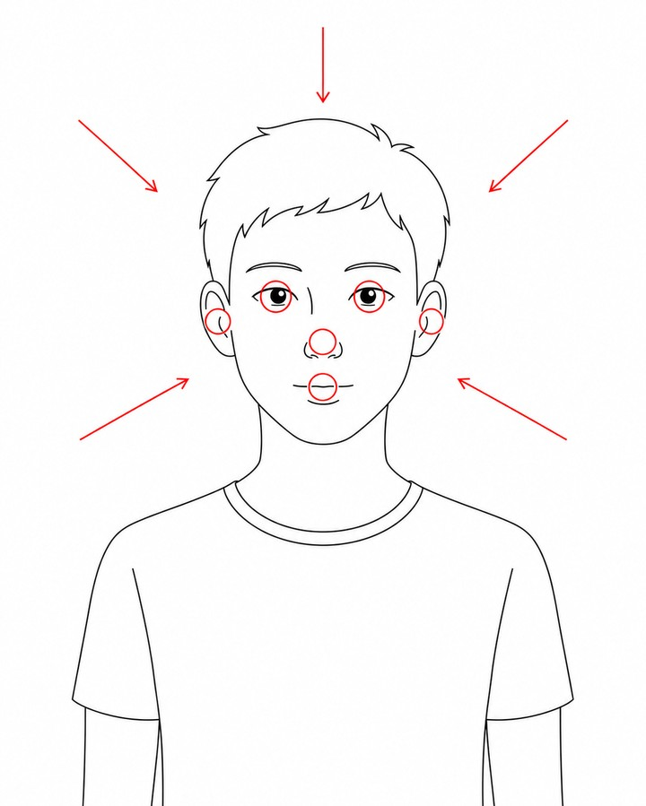
視覚・聴覚・嗅覚・味覚・触覚。外の世界からの刺激を顔の感覚器で受ける。
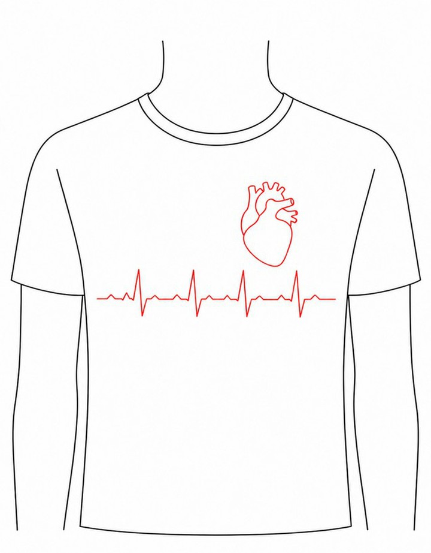
空腹・心拍・呼吸など、体の内部の状態を感じる感覚。
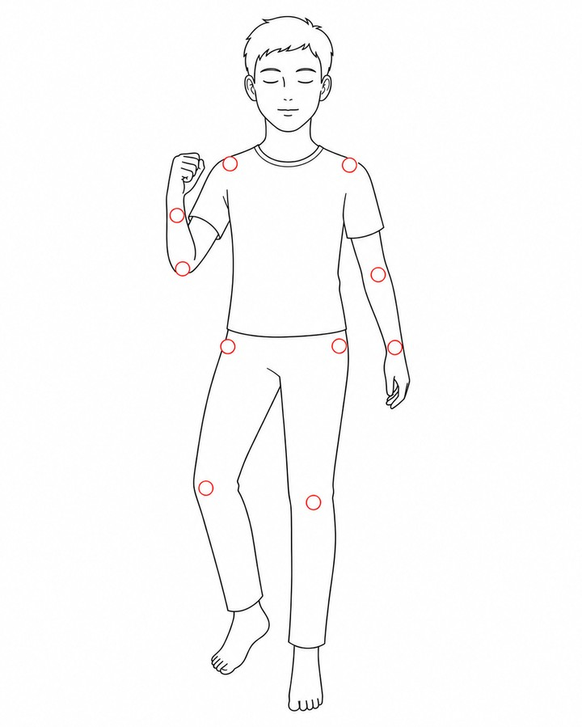
筋肉と関節からの信号で、自分の体の位置と動きを感じる感覚。
シェリントンは、感覚を「どこからの刺激か」で三つに分類した。proprio-(自分自身の)+ -ception(受け取ること)。固有感覚は、自分が自分の体を感じる感覚として独立した。
この感覚に名前を与えたのは、英国の神経生理学者チャールズ・シェリントンである。1906年、彼は著書『神経系の統合作用』で、感覚を発生源によって三つに分けた。外の世界を感じる外受容、体内を感じる内受容、そして筋肉や腱や関節からの信号で自分の体の位置と動きを感じる固有受容(proprioception)。proprio はラテン語で「自分自身の」、-ception は「受け取ること」を意味する。「自分が自分自身を受け取る感覚」。それが、それまで名前のなかった第六感に与えられた呼び名だった。
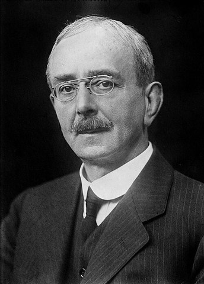
チャールズ・スコット・シェリントン
Charles Scott Sherrington (1857–1952)
英国の神経生理学者。脊髄反射、相反神経支配相反神経支配(reciprocal innervation)ある筋肉が収縮するとき、その反対側の筋肉(拮抗筋)は同時にゆるむ仕組み。腕を曲げるとき、表側の筋が縮んで裏側の筋がほどける ─ これが脊髄レベルで自動的に起きている、とシェリントンが示した。、シナプス概念の提唱で知られる。1906年の主著『神経系の統合作用』で proprioception を命名。1932年にノーベル生理学・医学賞を受賞。神経系を「ばらばらの臓器を一個体に統合する仕組み」として描いた。
図2 ─ 1906年、神経科学の三本柱
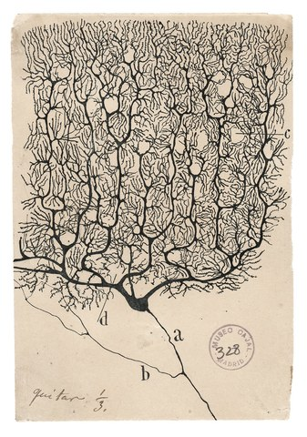
神経系は独立した細胞のネットワークだと示した。これはカハール本人の手描き(小脳プルキンエ細胞)。
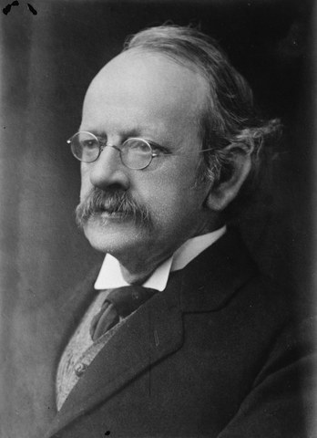
電子の発見。物質と信号の根源にある粒子が見つかった。
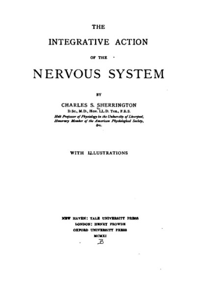
『神経系の統合作用』。固有感覚という名が初めて世に出た。
同じ年、神経系の構造(細胞)、その情報を担う粒子(電子)、そして神経系が体を統合する仕組み(感覚と反射)が、ほぼ同時に学問として立ち上がった。
Movements... in which we are not visually conscious of the parts moved... yet there is in us a sense of the actual position of those moving parts.
動かしている体の部位が視覚的に見えていなくても、それらの位置の感覚が私たちの中にある。
— Charles S. Sherrington, The Integrative Action of the Nervous System (1906)
よくある誤解
固有感覚とは、要するにバランス感覚のことだろう。
実際は
バランス感覚を担うのは内耳の前庭感覚前庭感覚(vestibular sense)内耳の三半規管と耳石器官が担う、頭部の傾きと加速度を検出する感覚。重力に対する姿勢制御に直結する。。固有感覚はそれとは独立に、頭・首・四肢の関節と筋の状態を検出する別系統である。
よくある誤解
触覚と同じものを、別の言い方で呼んでいるだけ。
実際は
皮膚に何かが触れる感覚と、自分の手の位置がわかる感覚は、別の受容器・別の神経経路で処理されている。両者を選択的に失った臨床例(後述)が、二つが別物であることを示した。
議論はここで止める。あなたの体に直接聞く方が早い。これから3つの簡単な動作を試してほしい。所要は1分。読みながらでよいので、片手をあけてほしい。一つずつ、目を閉じてやる。失敗したら笑いながら次に進んで構わない。
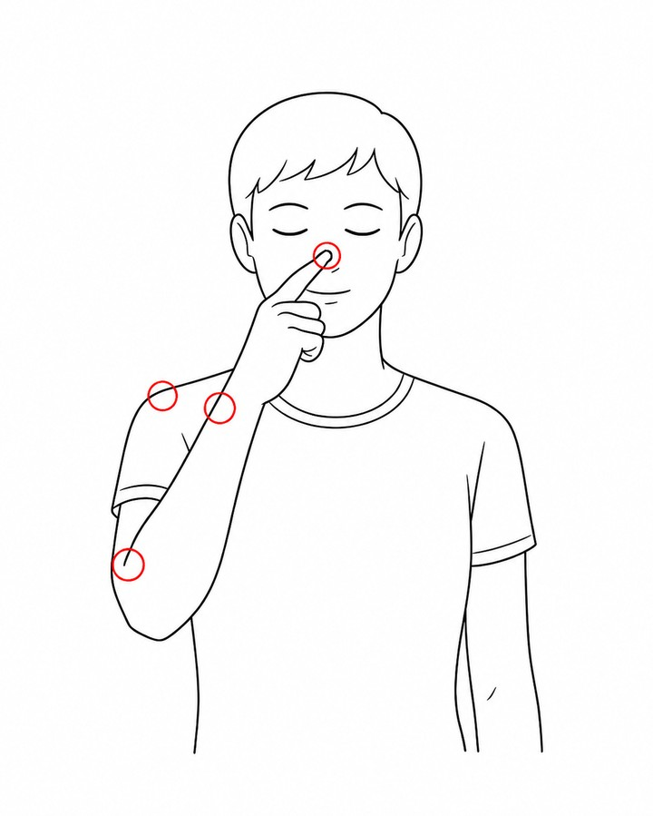
多くの人は、ほぼ正確に指先が鼻に届く。視覚を遮断したのに、自分の指の位置と鼻の位置を、両方とも知っていた。それを使ってあなたは指を運んだ。
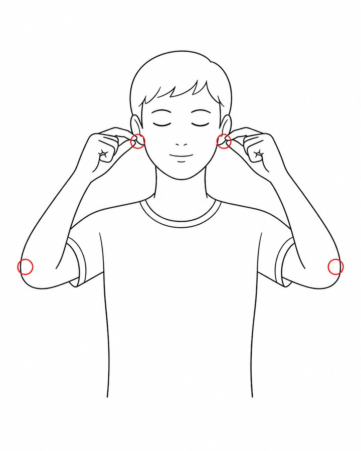
左右別々の腕が、それぞれ別々の目標(左耳・右耳)に同時に届く。あなたは同時に4つの位置(両手・両耳)を頭の中で把握しながら、視覚なしで動かした。
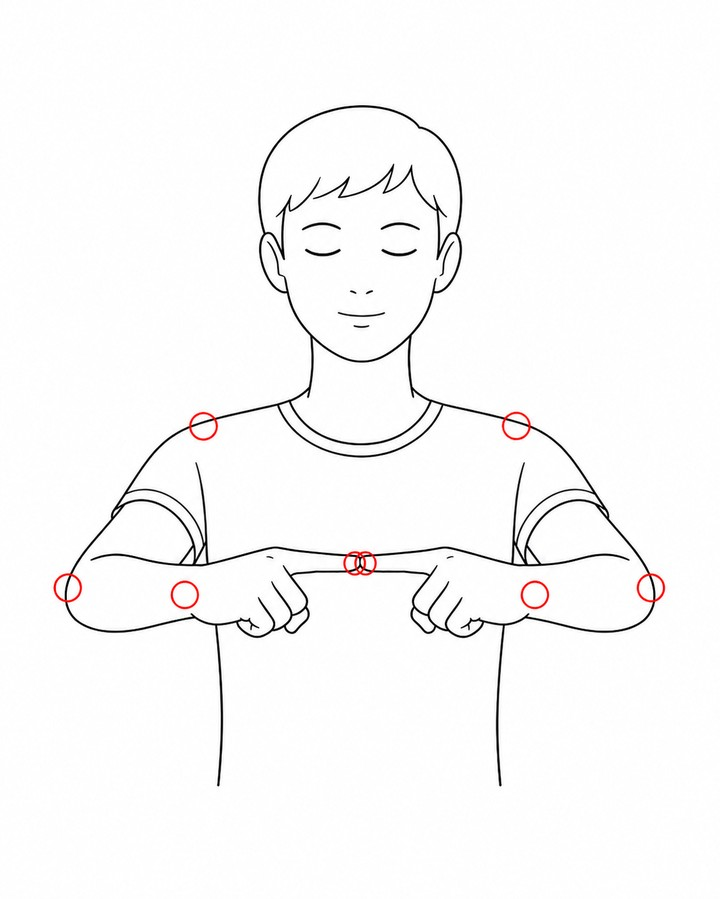
多くの人で、指先はほぼ重なるか、数センチずれる程度で止まる。あなたは両肩・両肘・両手首の6つの関節角度を同時に推定し、左右の指先を空間の一点で合わせた。
3つの動作の間、あなたは視覚を切っていた。聴覚も嗅覚も味覚も使わなかった。皮膚の触覚は、目標に触れた瞬間しか働いていない。それでも腕は迷わずに動いた。あなたの体の中に、あなた自身の体の位置を絶えず計測している装置がある。それが proprioception ─ シェリントンが1906年に名前をつけた、もうひとつの感覚である。
この感覚を使わない瞬間は、起きているあいだほとんどない。階段を降りる、コップを取る、フォークを口に運ぶ、キーボードを打つ。すべて、目で逐一手を追っているわけではない。それでもうまくいく。なぜなら、あなたは自分の手がいまどこにあるかを、見なくても知っているからだ。
固有感覚は、特定の器官が一つあるわけではない。筋肉、腱、関節、皮膚それぞれに、小さな受容器が分散して埋め込まれている。それらが「いまこの筋がこのくらい伸びている」「この腱にこのくらい張力がかかっている」「この関節がこの角度だ」という信号を脊髄に送り続ける。脳はその合算から、体全体の姿勢を再構成する。あなたが体の位置を知っているのは、何百という受容器が同時に発火しているからだ。
図3 ─ 主な固有感覚受容器の配置
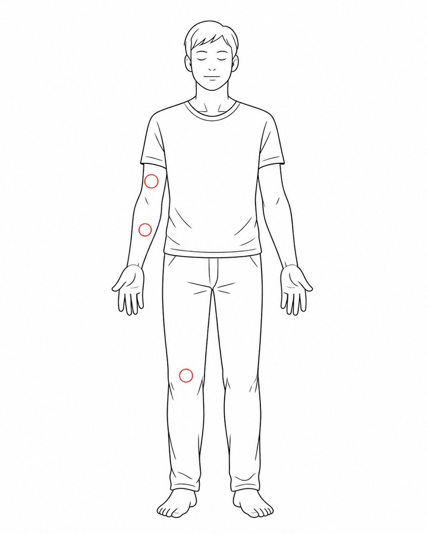
1 2 31上腕の筋肉
筋紡錘筋紡錘(muscle spindle)骨格筋に埋め込まれた紡錘形の受容器。筋線維の長さとその変化速度を検出し、Ia線維と II 線維で脊髄へ送る。
→ 筋肉の長さ・伸び方を検出
2肘の腱
ゴルジ腱器官ゴルジ腱器官(Golgi tendon organ)筋と腱の接合部にある受容器。腱にかかる張力を検出し、Ib線維で脊髄へ送る。過剰な負荷から筋を守る役割もある。
→ 腱にかかる張力を検出
3膝の関節
関節受容器
→ 関節の角度変化を検出
3種類の受容器が体じゅうに散らばっている(ここでは代表として上腕・肘・膝に1つずつ示す)。実際にはこれらが何百という数で全身に分布し、別々の信号を脳に送り続け、脳がそれらを統合して「いまの体の姿勢」を再構成している。皮膚の機械受容器も補助的に寄与する。
図3-b ─ 3つの受容器の解剖図
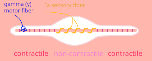
Hati / Sbmehta · CC BY 2.5
中央の核袋繊維と核鎖繊維核袋繊維 / 核鎖繊維筋紡錘の中にある2種類の特殊な細い筋繊維。核袋繊維(nuclear bag fiber)は中央に細胞核が集まった袋状で筋の伸びる速度を、核鎖繊維(nuclear chain fiber)は核が鎖状に並んだ形で筋の長さそのものを、それぞれ別々に検出する。に、Ia 求心性線維Ia 線維(Ia afferent fiber)感覚神経のうち最も太く伝導速度が最速。筋紡錘からの信号を秒速80〜120mで脊髄に運ぶ。「Ia(イチ・エー)」は神経生理学の分類記号。がらせん状に巻きついている。筋肉の長さと伸び方を検出する。
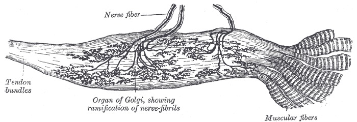
Henry Vandyke Carter · Gray's Anatomy plate 938 · Public Domain
腱の繊維束のあいだに枝分かれして広がる神経終末。腱にかかる張力を検出する。
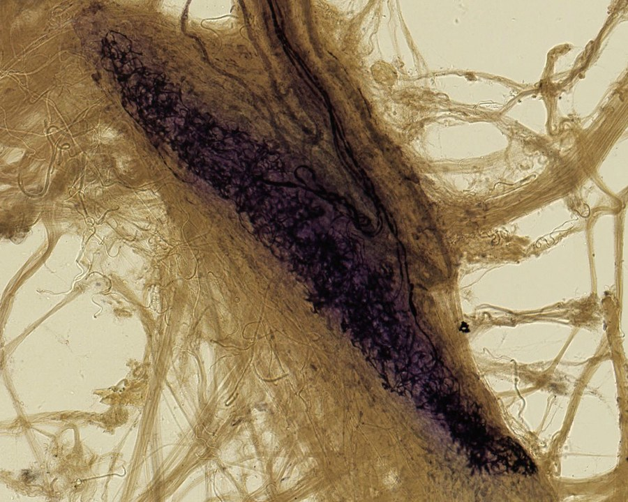
Angelo Ruffini 顕微鏡スライド · 1898以前 · Public Domain
Ruffini はこのスライドを1898年に Sherrington 本人に直接送った。それが固有感覚研究の出発点となった。関節包の角度変化を検出する。
3つの受容器の実際の解剖記録。中央のゴルジ腱器官は1858年以前の Gray's Anatomy 古典版、右の Ruffini 小体は発見者本人の顕微鏡スライド。Ruffini が Sherrington に送ったまさにその記録が、いま私たちが「自分の手はここにある」と感じる仕組みの始まりだった。
それぞれの受容器が出す信号は、脊髄を通って小脳と視床に送られ、最終的に大脳皮質の体性感覚野で「自分の体のいまの形」として統合される。これは1秒あたり何十回も更新されるリアルタイム処理で、あなたが意識する手前で全部済んでいる。意識に上るのは、その結果としての「自分の手がいまここにある」という感覚だけだ。
図4 ─ 受容器から大脳皮質までの情報経路
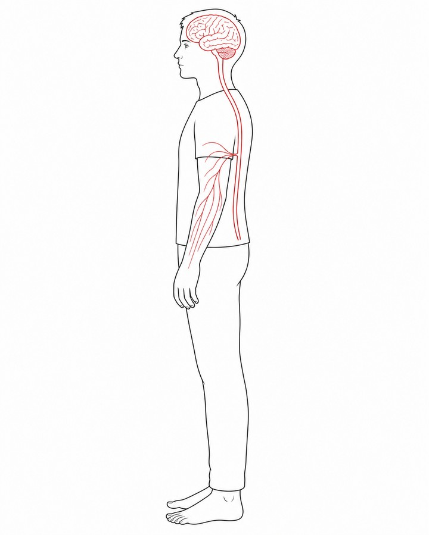
1 2 3 4 5↓頭部をズームイン↓
脳の中の位置 ─ ③小脳・④視床・⑤体性感覚野
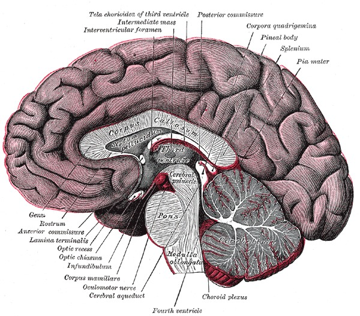
3 4 5Henry Vandyke Carter / Gray's Anatomy plate 720 (1858以前) / Public Domain
タブまたは番号バッジをクリックすると、各ステップの詳細が下に表示される。脊髄から先(③④⑤)は脳の内部を進む経路 ─ 視床(④)は脳の中心深部にあるので、断面図でしか位置が分からない。この経路全体を、脳は毎秒数十回まわしている。意識する0.1秒前にはすべて済んでいる。
この感覚が「ある」ことを最も鮮明に示したのは、それを失った人だった。1971年、英国ジャージー島の19歳の肉屋、Ian Waterman が、ありふれた胃腸炎のような症状で倒れた。数日後に目を覚ましたとき、彼の体は彼の指示を聞かなくなっていた。手足は動く。麻痺はない。だが、自分の手足がどこにあるかが、わからなかった。
イアン・ウォーターマン
Ian Waterman ─ 1971年発症 (当時19歳)
19歳のとき、ウイルス性胃腸炎を発端とする自己免疫反応自己免疫反応(autoimmune response)本来はウイルスや細菌を攻撃するはずの免疫システムが、誤って自分自身の体の組織を攻撃してしまう反応。Ian の場合、神経の中の特定の線維(感覚神経)だけを免疫が攻撃した。で、頸部 C3頸部 C3首の骨(頸椎)の上から3番目。脊髄の高さで言えば首の中ほど、肩より少し上にあたる。「C3 以下」とは、この高さから下の体ぜんぶを意味する。 以下の触覚と固有感覚を担う求心性神経(deafferentation)を失った。運動神経と痛覚は無傷。「視覚で動きを逐一確認する」という代償戦略を獲得し、医師 Jonathan Cole の長年の追跡で、固有感覚研究のもっとも重要な臨床例となった。著書『Pride and a Daily Marathon』(Cole, 1991)、BBC Horizon『The Man Who Lost His Body』(1997)。
医師の Jonathan Cole が長年追跡した Ian の状態は、医学的にも極めて稀なものだった。deafferentationdeafferentation(求心路遮断)感覚を中枢に伝える求心性神経が失われた状態。Ian の場合、運動神経と痛覚は残ったまま、触覚と固有感覚を担う線維だけが選択的に破壊された。と呼ばれる症状で、運動神経と痛覚は無傷のまま、触覚と固有感覚を担う神経線維だけが選択的に破壊されていた。原因はおそらく、ウイルス感染をきっかけにした自己免疫応答が、特定の神経線維を攻撃したものだと考えられている(ポリニューリティスポリニューリティス(polyneuritis)多発神経炎。複数の末梢神経が同時に炎症を起こす疾患。Ian Waterman や、Oliver Sacks が描いた Christina のケースもこれに分類される。の一種)。
体は依然として動く。だが、Ian には自分の腕がいまどこにあるかがわからない。座っていれば、自分が座っていることがわからない。顔を触ろうとして、手は宙を泳ぐ。体は彼のものだったが、彼のものではなかった。倒れて入院した彼は、しばらくのあいだ「自分は完全に麻痺した」と思っていた。実際には、彼は動かそうと思えば動かせた。ただ、動かしている自分の体がどこにあるかを、感じることができなかっただけだ。
1971
発症 ─ 19歳
胃腸炎様の症状の数日後に倒れる。意識を取り戻したとき、頸部以下の触覚と固有感覚をすべて失っていた。「自分はもう動けない」と確信した。
1971–1973
入院 ─ 17ヶ月
病院のベッドで、彼は気づいた ─ 自分は本当は動かせる。問題は「動かしている体がどこにあるか感じられない」だけだ。視覚で逐一手足を見ながら動かす訓練を独力で開始する。
1980s–
Jonathan Cole との共同研究
神経科医 Jonathan Cole が Ian を追跡し始める。彼の動作のすべては「視覚による意識的計算」で組み立てられていた。普通の人が固有感覚で済ませている処理を、Ian は視覚と意志で代替していた。
1991
『Pride and a Daily Marathon』刊行
Cole による Ian の伝記が出版される。タイトルの "Daily Marathon" は、彼にとって毎日の歩行や食事が、健常者にとってのマラソンに相当することを指す。
1997
BBC Horizon "The Man Who Lost His Body"
ドキュメンタリーが放映される。番組の終盤、Ian は NASA の研究者と会う ─ 無重力空間で固有感覚が乱れた経験をする宇宙飛行士たちは、彼の状態に最も近い人々だった。
現在
暗闇では、いまも倒れる
部屋の電気が突然消えると、Ian は立っていられない。視覚という代償が切れた瞬間、彼の体は再び消える。半世紀以上経った今も、固有感覚は戻っていない。
同じ時期、神経学者 Oliver Sacks も、ほぼ同じ病態を持つ女性 Christina の症例を世に紹介した。彼が彼女に与えた章のタイトルは「The Disembodied Lady」── 体を失った女性。Christina は手術前のごく軽い感染をきっかけに、ある朝、自分の体が「どこかにある何か」になっていることに気づく。彼女もまた、視覚を頼りに動作を再構築するしかなかった。
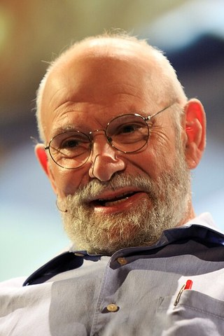
オリヴァー・サックス
Oliver Wolf Sacks (1933–2015)
英国出身の神経学者。臨床例を文学的に描く語り口で知られる。代表作『妻を帽子と間違えた男』(1985)第3章「The Disembodied Lady」で Christina の症例を描き、固有感覚を「我々が持っていることに気づかないまま使っている第六感(sixth sense)」として広く一般に知らしめた。
She had lost something fundamental — the ground of being, the sense that one is, that one's body is one's own.
彼女は何か根本的なものを失っていた ─ 存在の地盤、自分が在るという感覚、自分の体が自分のものであるという感覚。
— Oliver Sacks, "The Disembodied Lady" in The Man Who Mistook His Wife for a Hat (1985)
Sacks がここで言うのは比喩ではない。固有感覚を失うと、自分の体が自分のものだという感覚そのものが消える。それは触覚や運動能力を失うのとは別の、もっと深い喪失だった。「自分が在る」という基底を、固有感覚が支えていたことを、失った人だけが知ることができる。
五感を失うことは想像しやすい。目が見えなくなる、音が聞こえなくなる、匂いがしない。それぞれにつらい経験だが、私たちは想像することができる。固有感覚を失うとどうなるかは、想像が難しい。なぜなら、私たちはこの感覚をもともと意識していないからだ。意識していないものを、失った状態として想像することはできない。
"But there are other senses — secret senses, sixth senses, if you will — equally vital, but unrecognized and unlauded."
「五感は知られ、讃えられる。だがほかにも感覚はある ─ 秘められた感覚、もし呼んでよければ第六感。同じく不可欠で、ただ知られず、讃えられないだけ」
— Oliver Sacks, "The Disembodied Lady" in The Man Who Mistook His Wife for a Hat (1985)
あなたがいま、椅子に座っているか、立っているか、寝そべっているか。腕を組んでいるか、組んでいないか。そのすべてを、いま視覚なしで答えられる。当たり前だ、と思うだろう。だがそれは当たり前ではない。Ian Waterman は、目を閉じれば自分が立っているかどうかすらわからない。あなたの「当たり前」は、何百もの受容器が今この瞬間も発火し続けていることの、結果として生まれている。
シェリントンが1906年に名前をつけてから120年、固有感覚はまだ多くの人にとって、ふだん意識しない感覚のままだ。だが少なくとも、名前はある。あなたが目を閉じて指で鼻に触れるとき、あなたが使っているもうひとつの感覚を、あなたは今知っている。それは proprioception という。
文化と応用
BBC Horizon『The Man Who Lost His Body』(1997)
Ian Waterman と Jonathan Cole の共同インタビューを軸に、固有感覚という概念を一般視聴者に伝えたドキュメンタリー。番組の終盤で NASA を訪ね、無重力下で固有感覚が乱れる宇宙飛行士訓練のシミュレーションが、Ian の日常に最も近いと示される。
Oliver Sacks『妻を帽子と間違えた男』(1985)
第3章「The Disembodied Lady」で Christina のケースを描く。固有感覚を第六感(sixth sense)として一般読者に紹介した章であり、この概念を世に浸透させた決定的な仕事。Sacks 自身の言葉は本記事中盤の引用ブロックを参照。
宇宙開発 — NASA の無重力訓練
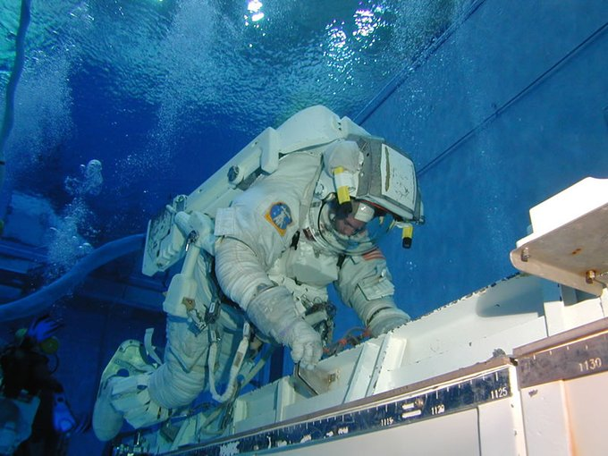
NASA Neutral Buoyancy Laboratory ─ 6.2百万ガロンの水中で無重力を再現する訓練施設。
無重力環境では、地上で使われている前庭感覚と固有感覚の重力前提が崩れる。宇宙飛行士は、訓練と適応のあいだに「自分の体がどこにあるかわからない」状態を経験する。これは Ian Waterman の状態に最も近く、長期滞在ミッションの設計で参照されている。
The Integrative Action of the Nervous System
proprioception を命名した古典。感覚の三分類(外受容・内受容・固有受容)が初めて提示された。Internet Archive で全文が公開されている。
Pride and a Daily Marathon
Ian Waterman の発症から代償戦略の獲得までを、長年の臨床観察に基づき描いた決定版。固有感覚研究において最も詳細な臨床記述として今も参照される。
The Man Who Mistook His Wife for a Hat — Ch.3 "The Disembodied Lady"
Christina の症例。固有感覚を「第六感」として一般読者に紹介した。臨床と文学の境界を行き来する Sacks の代表的な仕事。
Sherrington's "The Integrative action of the nervous system": A centennial appraisal
シェリントンの主著刊行100周年の評価論文。proprioception 命名の文脈と、その後の神経生理学への波及を整理している。
Ian Waterman の生活と研究を取材。番組内で NASA との接続が示され、固有感覚研究と宇宙開発の重なりが提示された。
画像クレジット ─ Oliver Sacks: Erik Charlton (CC BY 2.0) / Muscle spindle diagram: Hati & Sbmehta (CC BY 2.5) / 他はすべて Public Domain (via Wikimedia Commons / Internet Archive)。
e. Tamaki